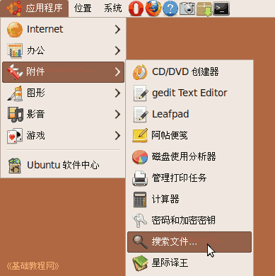
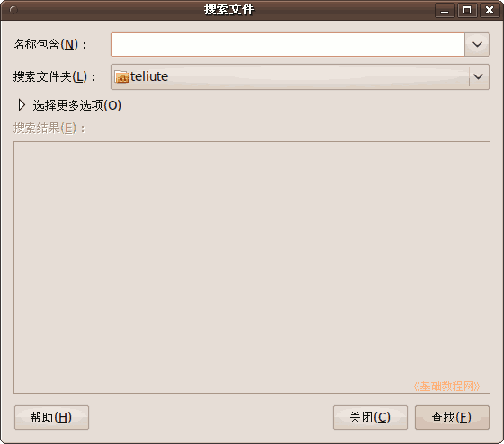
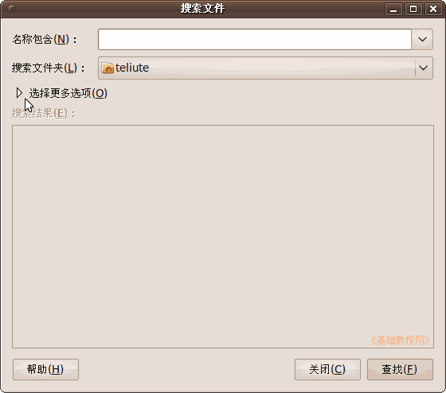
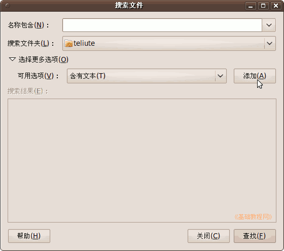
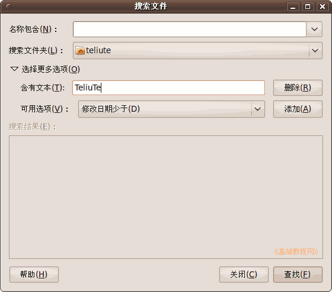

Ubuntu/GNOME 桌面程序指南
作者：TeliuTe 来源：基础教程网
六十四、搜索文件 返回目录 下一课使用它，您可以搜索硬盘中的文件；
1、搜索文件
1）点菜单“应用程序 - 附件 - 搜索文件”，打开窗口；

2）在出来的窗口中，您可以搜索文件名，也可以按条件来搜索；

3）点“选择更多选项”三角按钮，出来多个条件选项；

4）点“添加” 可以把 “包含文本”条件加进来；

5）输入文本，然后点“查找”就可以了，还可以添加其他选项；

6）其他请参阅“位置 - 搜索文件”的介绍：../lesson50/lesson50.html
本节学习了搜索文件的基础知识，如果你成功地完成了练习，请继续学习下一课内容；
本教程由86团学校TeliuTe制作|著作权所有
基础教程网：http://teliute.org/
美丽的校园……
转载和引用本站内容，请保留版权信息和本站链接。